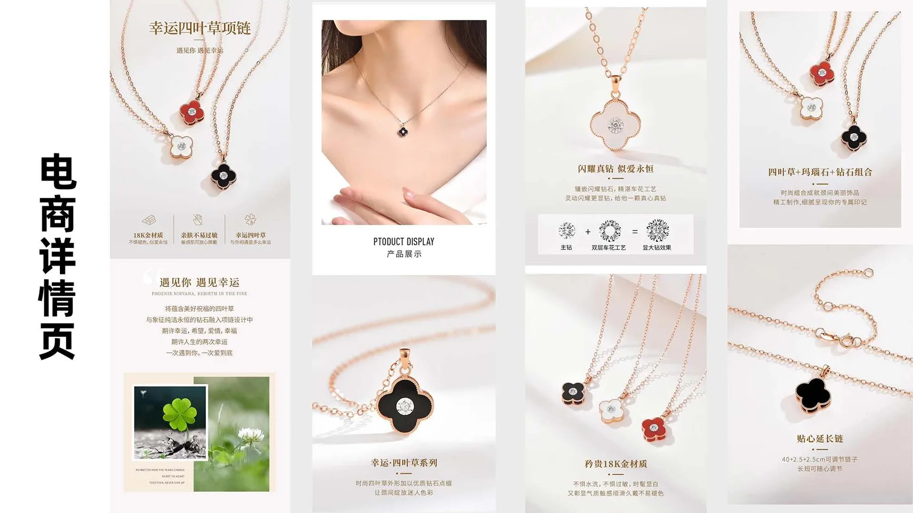
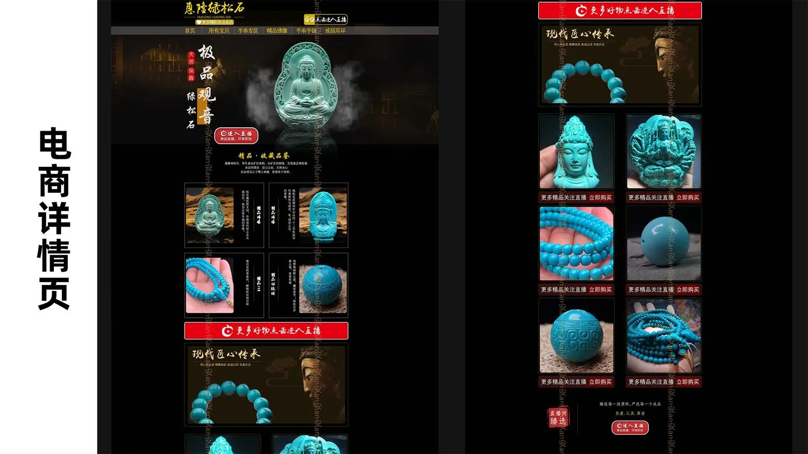
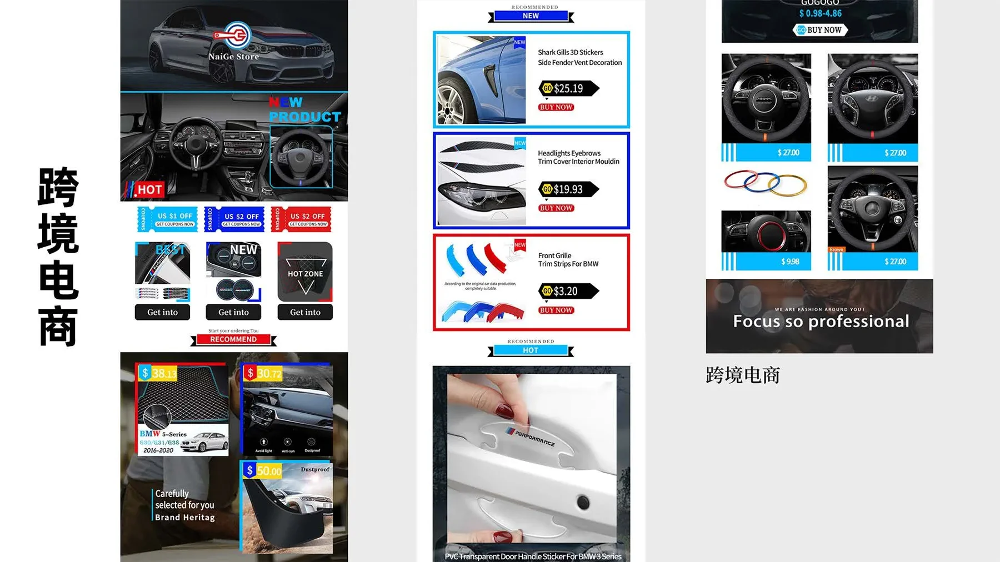

电商详情首屏卖点与转化页面
从定型喷雾、洗发水到面膜，为不同品类建立各自的色彩与商品表现。 将视觉规范、AIGC 素材和完整详情页串联起来，呈现从首屏吸引到卖点说明的设计过程。
- 内容 / Content
- 视觉规范 / AIGC 素材 / 详情页
- 商品 / Product
- 日化个护 / 饰品 / 汽车配件
- 平台 / Platform
- 淘宝详情页 / 跨境电商
- 设计重点 / Focus
- 品类气质 / 卖点层级 / 场景表达
从商品气质到购买理由
四组日化个护详情设计，以不同配色、光影和使用场景回应产品特征。 每组保留视觉规范、素材展示与完整页面，呈现统一风格如何贯穿整条阅读路径。
更多品类的详情表达
从饰品的材质与工艺，到跨境商品的规格与购买信息，依据品类调整页面重点，保留清晰的卖点层级。


